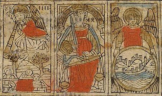
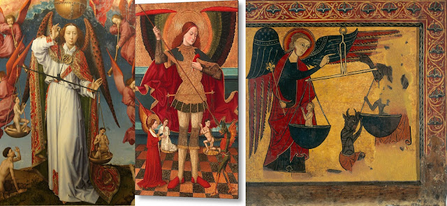
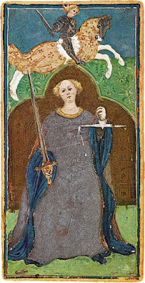
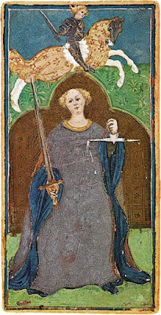
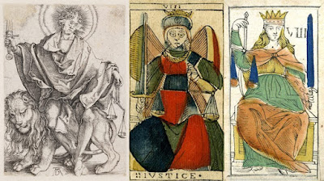
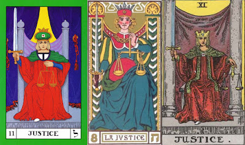
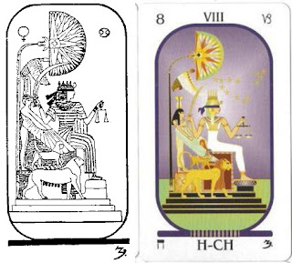

Justice
The Justice card has been remarkably consistent over the centuries: it is always a lady holding a scales in one hand and a sword in the other. What varies is where it is in the sequence. That affects the meaning of the card. 20th century tarot decks for divination in the English-speaking world mostly put her in the 11th position; in that way it correlates, in the Golden Dawn's system, with the zodiacal sign of Libra, the Balance, and derives some of its meaning from that sign in the context of astrology. Before late 1880s, however, it never had that position. Instead, in the early years it was either 20th or somewhere between 7th and 9th in the sequence, the most popular being 8th.
The Justice Card in the 20th position
It was 20th in Ferrara and other places in Northeastern Italy, first recorded around 1500 in a written sermon done somewhat earlier and in many sources after that, up until the end of the 16th century, when the d'Este ruling family lost control of Ferrara, replaced by direct rule by the Papacy, and all mention of the tarot ceased. Nonetheless its role as the 20th trump in a trick-taking game that was as much skill as luck, is of much historical interest, because Ferrara was one of the three or four earliest places where the tarot is mentioned.
Its meaning, by general consensus, is affected by the card just before it in the sequence, namely the card then called "The Angel", meaning the Angel that blows its trumpet announcing the Last Judgment. Since the 17th century that card has been called "The Judgment". If Justice is the next card, that strongly suggests, even though it is the same lady with the same scales as in decks where it is 7th-9th, that she represents the Justice rendered by God in the Last Judgment. The final card was, in the Ferrara-area Sermone, called "The World"; but the preacher added immediately after, "cioe Dio il Padre", "that is, God the Father." This final card was represented, rather mysteriously, by an angel holding a globe in which can be seen hills and buildings. Presumably it is the "New Jerusalem" that Revelation promised to those that were found worthy. In that way the three cards tell a story about the end of the End Times. Or else it is the Angel of Providence, leading all to God in their own way.
This kind of justice has a long pedigree. In Egypt the soul was thought to be taken after death to the judgment hall, where the heart would be weighed against the feather in the headdress of Ma’at, goddess of Right Order, i.e. Justice. He or she would be required say whether it had committed any of a series of sacred prohibitions. It would not take a positive answer to many questions before the balance would be tipped against it and it would be devoured by a crocodile-headed monster.
{kind=link}
 In Greece there was the judgment of Zeus as to which of two warriors locked in combat would kill the other. Their fates relative to each other would determine the outcome.
In Greece there was the judgment of Zeus as to which of two warriors locked in combat would kill the other. Their fates relative to each other would determine the outcome.In the case of St. Michael, it was never said in so many words what was being weighed against what in the two pans of the balance. Perhaps it is merits vs. demerits; or possibly two separate souls, paired because one goes up and the other down. And while Justice in the 16th century reports from Milan and points north and west give it the 8th position, it remains possible that in the deck containing the earliest known Justice card, the Visconti-Sforza of the 1450s, there is a reference to the Last Judgment, if not Michael then Christ himself. Rev. 19:11says, in the Vulgate Latin translation that was standard at the time (http://www.latinvulgate.com/lv/verse.aspx?t=1&b=27&c=19):
et vidi caelum apertum et ecce equus albus et qui sedebat super eum vocabatur Fidelis et Verax vocatur et iustitia iudicat et pugnatCorrespondingly, above Justice, holding her scales and sword, we see a vigorous young warrior on a white horse. Assuming the deck, or one like it, was made for the edification and entertainment of the younger members of the Visconti-Sforza family (their mother was a Visconti, daughter of the previous duke; their father, the new duke, was a Sforza), the message seems to be that of emulating this knight.
And I saw heaven opened: and behold a white horse. And he that sat upon him was called faithful and true: and with justice doth he judge and fight.
In cases of divine judgment, prayers were thought efficacious regarding the outcome, in the sense that the Christian God is a god of mercy, and contrition by the soul concerned and petitions by his or her well-wishers among the living could affect the outcome with God as much as with human rulers with the power to pardon and mitigate judgments.
The card in 7th to 9th position
The other place in the sequence where Justice could be found in the sequence was in the slots between Love and the Wheel. In this case it is one of the four “cardinal virtues” of the Church, taken over from the Roman statesman and philosopher Cicero, who had said (De Inventione II, 153), who said:
Habet igitur partes quattuor: prudentiam, iustitiam, fortitudinem, temperantiam.Cicero in turn had taken them from Plato, although with one change: instead of Prudence, Plato's highest virtue was Wisdom. The difference between the two is that Prudence is the particular form of wisdom that pertains to human affairs, as opposed to that which pertains to other matters, such as the basic principles underlying the universe. St. Thomas Aquinas, the dominant philosopher in Western Europe of the 15th century, reaffirmed this perspective in a Christian context (Summa Theologiae, II-II [Second Part of the Second Part], q. (question) 47, a (article) 2, at http://www.corpusthomisticum.org/sth3047.html, translated 1920 by the Fathers of the English Dominican Province, online at http://www.newadvent.org/summa/3047.htm. I thank Andrea Vitali for drawing my attention to this section)
(It [virtue] has then four divisions--prudence, justice, fortitude, and temperance.)
... sicut supra dictum est, sapientia considerat causam altissimam simpliciter. Unde consideratio causae altissimae in quolibet genere pertinet ad sapientiam in illo genere. In genere autem humanorum actuum causa altissima est finis communis toti vitae humanae. Et hunc finem intendit prudentia, dicit enim philosophus, in VI Ethic., quod sicut ille qui ratiocinatur bene ad aliquem finem particularem, puta ad victoriam, dicitur esse prudens non simpliciter, sed in hoc genere, scilicet in rebus bellicis; ita ille qui bene ratiocinatur ad totum bene vivere dicitur prudens simpliciter. Unde manifestum est quod prudentia est sapientia in rebus humanis, non autem sapientia simpliciter, quia non est circa causam altissimam simpliciter; est enim circa bonum humanum, homo autem non est optimum eorum quae sunt.Notice here that there are also two types of prudence, that with regard to a particular given end, e.g. victory in war, and that with regard to "right conduct as a whole." Ethics is concerned with the latter. The highest cause, of course, is God, also known in Neoplatonist circles as "the One," "the Absolute," and so on (with one of these terms even made higher than another).
As stated above (II-II:45:1 and II-II:45:3), wisdom considers the absolutely highest cause: so that the consideration of the highest cause in any particular genus belongs to wisdom in that genus.Now in the genus of human acts the highest cause is the common end of all human life, and it is this end that prudence intends. For the Philosopher [i.e. Aristotle] says (Ethic. vi, 5) just as he who reasons well for the realization of a particular end, such as victory, is said to be prudent, not absolutely, but in a particular genus, namely warfare, so he that reasons well with regard to right conduct as a whole, is said to be prudent absolutely. Wherefore it is clear that prudence is wisdom about human affairs: but not wisdom absolutely, because it is not about the absolutely highest cause, for it is about human good, and this is not the best thing of all. And so it is stated significantly that "prudence is wisdom for man," but not wisdom absolutely.
Perhaps oddly, there is no card for either Prudence or Wisdom. There are various theories for why this is so. In the teachings of St. Thomas Aquinas, Prudence was an intellectual virtue, while the others were moral virtues. The difference is that while reason in the form of Prudence guides all the moral virtues, it does not itself motivate action. Aquinas explains (Summa Theologiae II-I, q. 58, a. 2):
Sic igitur ad hoc quod homo bene agat, requiritur quod non solum ratio sit bene disposita per habitum virtutis intellectualis; sed etiam quod vis appetitiva sit bene disposita per habitum virtutis moralis.
Accordingly for a man to do a good deed, it is requisite not only that his reason be well disposed by means of a habit of intellectual virtue; but also that his appetite be well disposed by means of a habit of moral virtue.
In other words, not only does he have certain habits of mind, with which to think about what he is doing, but also he desires, as a kind of habit, what is morally virtuous. Here Aquinas defines “appetite” not only in terms of bodily desires, but even humanity’s highest aspirations: “the appetite is nothing else than an inclination of a person desirous of a thing towards that thing” (Ibid., II-I q. 8 a. 1). In this case it is the inclination toward the virtuous life. Every moral virtue involves the intellectual faculty, because virtuous action is by conscious choice, an activity of the rational will.
St. Thomas Aquinas argued that while Prudence came first, Justice was
the primary moral virtue, as that with regard to which Fortitude must be
measured., which was therefore the third of the cardinal virtues.
Temperance, in turn, needed the development of Fortitude if it was to
succeed (https://www.newadvent.org/summa/3123.htm#article12).
"In things that are great, but not in bulk, to be great is to be good": wherefore the better a virtue the greater it is. Now reason's good is man's good, according to Dionysius (Div. Nom. iv) prudence, since it is a perfection of reason, has the good essentially: while justice effects this good, since it belongs to justice to establish the order of reason in all human affairs: whereas the other virtues safeguard this good, inasmuch as they moderate the passions, lest they lead man away from reason's good. As to the order of the latter, fortitude holds the first place, because fear of dangers of death has the greatest power to make man recede from the good of reason: and after fortitude comes temperance, since also pleasures of touch excel all others in hindering the good of reason. Now to be a thing essentially ranks before effecting it, and the latter ranks before safeguarding it by removing obstacles thereto. Wherefore among the cardinal virtues, prudence ranks first, justice second, fortitude third, temperance fourth, and after these the other virtues.
Justice, in the above is that which "establishes the order of reason in all human affairs." This is rather general, of course. In his section on justice, Aquinas offers a definition that is admirably compact, although it, too, requires attention to context to be understood properly. Speaking of justice, he says (https://www.newadvent.org/summa/3058.htm):
And if anyone would reduce it to the proper form of a definition, he might say that "justice is a habit whereby a man renders to each one his due by a constant and perpetual will"Given its importance, we might wonder why Prudence is not the title of any card in the sequence. It exists, as far as known for certain, only in the expanded tarot called minchiate, of which nothing but the name is known in the 15th century. There, as is known from surviving 17th century decks, it is rather artificially sandwiched in between the three theological virtues, cards also not present in the tarot in its standard forms. It may be that the function of Prudence has been assumed by some other card. Tarot historian Michael Dummett speculated that the Popess card was originally Prudence. I have promoted such a perspective in my post in this blog on that card. Some have suggested that it is the Hermit that represents Prudence. That, too, is not unreasonable. Others have seen Prudence in the Hanged Man, by negative example. Finally, some recognize it in the last card, called the World, which in some early versions had a woman above a circle or half-circle with castles, hills, and other geographical details in it. That position, too, has points in its favor. As the most important and pervasive of the cardinal virtues, it would not be surprising if it is represented in several of the cards.
In the Republic (of which a rough translation was done in Milan before 1410) Plato presented his four in the order Temperance, Courage, Wisdom, Justice. However that was merely his mode of exposition. Temperance corresponded to what he called the appetitive part of the soul, and in the body the stomach and sexual organs. Fortitude was centered in the heart and lungs, and Wisdom in the head. To that extent they went from the lesser to the greater.
As for Justice, it was the condition in which the different parts of the soul - or classes in the state - acted in harmony, each doing the work suited to it. In regard to justice in the well-regulated state, Plato has Socrates say to his interlocutor in the Republic (433d-e, at http://www.perseus.tufts.edu/hopper/text?doc=Perseus%3Atext%3A1999.01.0168%3Abook%3D4%3Asection%3D433d):
A thing, then, that in its contribution to the excellence of a state vies with and rivals its wisdom, its soberness, its bravery, is this principle of everyone in it doing his own task.So the Rulers and Guardians administer the laws, the soldiers defend the state, and the others, who practice trades and make money, produce the means of physical life. Here the tradesmen have to moderate the fulfillment of their desires in accord with what the wise rulers teach, and the soldiers have to be brave against what is to be feared, again instructed by wise leadership.
It is the same within the soul, which divides into three parts, one needing wisdom, one needing courage, and the third needing temperance. Justice is each performing its own task and not that of another part. As he says (443d-444a, http://www.perseus.tufts.edu/hopper/text?doc=Perseus%3Atext%3A1999.01.0168%3Abook%3D4%3Asection%3D443d)
...justice ... means that a man must not suffer the principles in his soul to do each the work of some other and interfere and meddle with one another, but that he should dispose well of what in the true sense of the word is properly his own, and having first attained to self-mastery and beautiful order within himself, and having harmonized these three principles,... and having linked and bound all three together and made of himself a unit, one man instead of many, self-controlled and in unison, he should then and then only turn to practice if he find aught to do either in the getting of wealth or the tendency of the body or it may be in political action or private business, in all such doings believing and naming the just and honorable action to be that which preserves and helps to produce this condition of soul, and wisdom the science that presides over such conduct.Here we have wisdom as primary, justice as ordering the soul in accordance with wisdom, with courage and temperance as virtues supporting both, in the lower parts of the soul.
Plato does not give much attention to justice in the legal or interpersonal sense, of "giving to each his due", although he acknowledges it readily enough, in one brief passage (433e:
Will not this be the chief aim of their [the rulers'] decisions [in lawsuits], that no one shall have what belongs to others or be deprived of his own?But on the whole he is concerned with a broader issue, in which what a person is due is work he is suited for, within the limits of a well-regulated state, and should not go beyond his qualifications; he especially warns against people involved primarily in the military or money-making running the state. .
Aristotle developed, in the social sphere, what Plato did not, and succeeding centuries took from both. In Aristotle's conception, which Aquinas followed, there are three types of justice: acting in accordance with the law, distributive justice, and commutative justice. (These will be discussed in detail later.) There is no reference to parts of the soul or classes in the state. Fortitude and Temperance are still important virtues, and in regard to each other Aquinas argues in a way that is similar to Plato: Fortitude unless limited by considerations of justice is merely "might makes right". And in order to resist the temptations of lust, over-eating, and drunkenness, fortitude is necessary. And governing all three, Prudence is required. So Prudence is first, Justice is second, then Fortitude, then Temperance.
In the tarot decks of Florence, the cards were put in the order, from low to high: temperance, fortitude, and justice. That corresponds to Plato's order of presentation. In the tarot centered in Milan, and later adopted in France, the cards go: Justice, Fortitude, Temperance. That is the order of Aquinas, going in order of dependence one on the other..
In some early tarot sequences, Justice comes just after the Triumphal Chariot; in others it comes just before. If Justice is before, that emphasizes that triumphs must be achieved justly. If after, it emphasizes that one must not take advantage of one’s triumphs by then acting unjustly. It is a matter of emphasis, and a minor one at that..
The sword, the scales and the background
Remembering to keep in mind the Golden Dawn’s switching of the positions of Justice and Strength, let us turn to the symbolism on the card. The sword is obviously the threat of harm or destruction if the dictates of justice are not obeyed. This is true whether we are talking about justice in the legal systems of secular and religious authorities or about some non-human force acting in the universe.
Then there is the scales. What does this have to do with justice? Writers on the tarot today give various answers to this question. It is said to indicate the necessity of justice to treat everyone equally and impartially. But how does a scales express that requirement? It is not explained. But we could imagine the law on one side and a person being accused on the other. In that sense, the image fits. But then how do we determine whether a law itself is just? Do we weigh it against more fundamental laws? Perhaps, but there is a more specific type of reasoning that the scales corresponds to.
Aquinas, following Aristotle before him, distinguishes between “just’ in the sense of “lawful” and two other types of justice, namely, distributive and commutative (as they were called by Aquinas). When people are engaged in a collective endeavor, at the end they are entitled to rewards, whether money, goods, or honors, proportionate to their contribution. The reward, when just, in a sense “equals” the contribution made by the individual. One who has made twice the contribution gets twice the reward. That is distributive justice. Commutative justice is between individuals, or entities treated as individuals. An exchange from one person to another is just when the amounts are somehow “equal” in value.

An example is a 1531 illustration to Alciati's Emblemata, at left. The epigram below the picture reads,
Nemesis follows on and marks the tracks of men. In her hand she holds a measuring rod and harsh bridles. She bids you do nothing wrong, speak no wicked word, and commands that moderation be present in all things.Below right is an ancient statuette of the goddess. Below center is the goddess whipping a postulant as part of a Dionysian women's initiation, from the "Villa of the Mysteries" at Pompeii. While this fresco was not known until the 20th century, it is similar to flagellation, usually done to oneself, as practiced in some Christian orders. Below left is the Vieville Justice card. All three ladies, be sure to notice, have wings. I will get to that in a moment.
In the Vieville, it appears that the lady has her ankles crossed. This feature is more apparent in a few other styles, notably the Besancon, as exemplified by Dodal (center below) and Minchiate (at right below).
These cards are perhaps influenced by Durer's Sol Iusticia (at left below), or the tradition on which that depiction is based. Panofsky says of this posture, in relation to Durer's engraving (Life and Times of Albrecht Durer, p. 78):
A nimbed man with the attributes of Justice, a pair of scales and a sword, is seated on a lion patterned after those which Durer had sketched in Venice (909, fig. 57, and 1327). The crossed legs also refer to the idea of Justice; this attitude, denoting a calm and superior state of mind, was actually prescribed to judges in ancient German law-books.
What Aristotle and Aquinas were concerned with was justice guided by reason, as opposed to raw emotion. In beneficial exchanges, the person who gives up something gets something equivalent back. The same principle applies to harmful acts. The person who has lost something, for justice to be done, and at a minimum (because other factors enter in: the person receiving the harm does so involuntarily, and the person harming may try to avoid identification and capture), has to gain something equivalent, and the other has to lose something equivalent. Does the satisfaction of seeing one’s attacker lose his eye recompense the one who has lost his eye? For some, perhaps. For others, a different recompense, such as money or services, would be more meaningful. This is a difficult subject. But the principle is still that of the scales, restoring the balance. In this framework Aquinas says of vengeance that if it is directed to the good of the person being punished, it is lawful and just.(II-II, q. 108, a. 1).
These types of justice apply to divine justice as well. From the idea that the punishment should fit the crime, and that when justice is served the perpetrator is released, comes the medieval idea of Purgatory, as a place where justice is served to some extent, after which the purified soul is free to enter Heaven.
There may also be the influence of the Kabbalists’ Tree of Life in such an attribution, even though it was not until Papus, in 1889, that this bit of esoteric Jewish lore was applied to the tarot explicitly. Papus assigned the sefira Hod to the card (the orange circle in the diagram at left), which is on the “pillar of severity” just below Gevurah, meaning severity (also called Din, meaning Judgment), a suitable place for Justice to be dealt to wrongdoers. But it also connects across the Tree to the “pillar of mercy” via the path to Netzach (the green circle): in other words, it is justice tempered with mercy--but not too much mercy, because justice must still be served.
Something similar was in effect for the Golden Dawn's application of the Tree of Life to the card. They associated the tarot sequence with the paths between sefiroth; Justice was the path between Gevurah (red) and Tifereth (yellow). That is the mitigation of Severe Judgment by the "middle path" which is neither overly severe nor overly merciful.
Noblet's and Vieville's innovation did not last; by the 18th century a semi-rectangular background had returned, as can be seen in the Conver 1761 at far right above. .
In one 15th century Florentine hand-painted card, the so-called "Charles VI" (at right above), there is an octagonal halo around her head. This is characteristic of virtues in Florentine art of the time, as can be seen by the detail at left above from a "seven virtues" cassone painting by dal Ponte, probably of the 1430s. The "Charles VI" Strength and Temperance cards have similar halos.
19th and 20th century innovations
I have already mentioned Kabbalah. It was not explicitly applied to the cards until Levi in 1856, but might have been done earlier in some form. Levi had his own interpretation of the card in other ways. declared that the card was about “balance, attraction and repulsion, life, fear, promise and threat”. The key here is the word “balance”, which describes the object in the lady’s hand, but how the other words in his account fit the card is unclear. Perhaps it reflects political thinking of the time, in which the what was desirable was a “balance of power” between opposing states, where potential enemies are balanced by alliances with those who are not enemies, and the fear of retaliation holds the forces in check.
Paul Christian’s interpretation also seems influenced by similar conceptions. He writes (History of Magic, 102):
Justice, which proceeds from God, is the stabilizing reaction which restores order, equilibrium between right and duty....Every action produces its reaction, and the Will must foresee the onslaught of contrary forces in time to lessen or check it.He might have been thinking of the aftermath of the Crimean war. Russia had started that war by trying to stake a claim to the Bosporus, which as the narrow strait separating the Black Sea from the Mediterranean was vital to Russian shipping. Britain and France stepped in to defend Turkey, and thousands of lives and millions of francs were expended. Finally the old czar died and a new czar came to power that admired French culture and dropped its demands. Rather than insisting on recompense for its losses, however, France was more concerned to re-establish a "balance of power" against Prussia and Austria, so as to keep the peace Unfortunately France got reckless and broke the peace itself, and Germany took revenge rather than aiming at peace. The result, of course, was more war, in which France, still smarting from the old defeat, took vengeance on Germany, resulting in more war. Had the above advice been heeded, the world might have been spared much bloodshed. (This is not to say, however, that Christian always moralized wisely; his comments on other cards, most notably that of Fortitude, "La Force", as we shall see, are a recipe for disaster.)
There is also an affinity to Plato's concept of justice. Each of the parts of the soul, or the state, tends to see the whole soul in terms of its own perspective, whether as ruler, guardian, or tradesman. It is the reconciliation of opposing forces and the harmony of the whole that its well-being is secured, which is the same as the realization of justice.
Christian also introduced elements that had not before been explicitly associated with the card, namely those of astrology. He assigned to Justice the zodiacal sign of Leo, a sign often associated with generosity in the administration of power. With such assignments, the stage was set for the Golden Dawn, who by adjusting both the Hebrew letter associated with the card and its place in the sequence, managed to make the Justice card eleventh and associate it with the zodiacal sign of Libra. This is a sign that is interpreted not only in terms of justice, but more in terms of harmoniousness and a commitment to partnership.
The Golden Dawn justified this switch by reference to the Sefer Yetzirah, which they saw as an important piece of esoteric wisdom that deserved to be the way to integrate the tarot with astrology. The sefer Yetzirah assigned particular astrological entities to particular letters of the Hebrew alphabet, according to two principles: first, what type of letter it was, mother, simple, or double; and second, its sequential position in the type of astrological entity assigned to that type of letter. The 12th letter of the Hebrew alphabet was the sixth simple letter and hence got the sign of Libra. Since the Golden Dawn started assigning letters starting with the Fool, which either had no number or was assigned a 0, the 12th letter would be assigned to card 11. Since the sign of Libra was a scales, and Justice had a scales, the coincidence of the symbols was seen as a confirmation of the correctness of the system.
These machinations, in my view, are merely the artificial commandeering of one system, based on the particularities of Greek astronomy and the Hebrew alphabet, to serve another, deriving from a different source, by hook or by crook. Yet there is no harm done, at least in this case. The symbolism of the tarot works by association, and the zodiacal sign of Libra is as valid as any. Traditionally that sign is associated with the desire for harmonious relationships, including partnerships in joint endeavors. That is actually close to Plato’s conception of justice in the Republic, which defined justice as each part of the soul or the state doing its particular job in a way that completes the whole.
Of more importance to Golden Dawn-inspired interpretations is the card’s position after the Wheel and before the Hanged Man. Coming after the Wheel, which they interpreted as about orienting toward spirit rather than matter, its position just after spiritualizes the card. Instead of being about worldly distributions of goods and evils, it is about spiritual gifts. Waite associates the card (below right) with “election” to higher things, a gift which one either has or does not have. He writes:
The moral principle which deals unto every man according to his works--while, of course, it is in strict analogy with higher things;--differs in its essence from the spiritual justice which is involved in the idea of election. The latter belongs to a mysterious order of Providence, in virtue of which it is possible for certain men to conceive the idea of dedication to the highest things. The operation of this is like the breathing of the Spirit where it wills, and we have no canon of criticism or ground of explanation concerning it. It is analogous to the possession of the fairy gifts and the high gifts and the gracious gifts of the poet: we have them or have not, and their presence is as much a mystery as their absence.The idea seems to be an extension of Plato, who in the Phaedrus distinguished between types of personality, dividing them according to particular gods. The privileged, of course, were the philosophers. Each, however, is gifted in a particular way. If justice is a matter of each part of the soul fulfilling its proper function, then those who are gifted with access to “higher things” have a special responsibility, which will be manifest in later cards, especially the Hanged Man, for Waite a card of sacred sacrifice.
Waite calls the sides of Justice's chair “pillars” and puts a curtain between them, so as to compare the card with that of the High Priestess. Yet “the pillars of Justice open into one world and the pillars of the High Priestess into another," a rather obscure conclusion. After the 11th card comes the 12th, presumably a kind of doorway behind the veil of what is now a form of Fate.
The other main occultist versions of the card, at least those of Paul Foster Case (above left) and Oswald Wirth (above center), kept very much to the traditional hard-backed chair. Inexplicably Wirth gives Justice as masculine face. Another idea, presented by Robert Falconnier and Maurice Wegener in a black and white version, added the Egyptian goddess Ma'at behind the scales-lady, in keeping with the then-prevailing Egyptianization of the cards. This design was taken over by the C.C. Zain's "Brotherhood of Light", which still exists today and is now in color. The blindfold, of course, represents impartiality.
The Jungian Approach
Sallie Nichols relates the Justice card to the Jungian idea of the “compensatory function’ of the unconscious in relation to conscious adaptation. That is, the unconscious balances out the inevitable selectivity of consciousness by expressing in dreams and unconscious projections onto others what is absent from our consciousness. One who is gifted with intellect will be attracted to someone gifted in feeling. Someone gifted in intuition will be attracted to someone with a keen attunement for the world of the senses and the here and now. There will also be corresponding dreams. Given that associations to the cards come of their own accord without conscious choice, what associations come up are again part of the unconscious compensatory function of the unconscious. One way in which the unconscious exercises this function is thrugh dreams. Nichols says (Jung and Tarot, 156):
The unconscious always acts in a manner compensatory to consciousness. A dream does not bring up a figure diametrically opposed to the conscious standpoint. Rathe, dream figure modify the ego position. They are not the enemies of consciousness. they are to be viewed more as opponents in a friendly game or as partners engaged in a mutual task.Consciousness is by nature focused, excluding many things received and processed by the mind from awareness. Dreams can let us know what we are not paying attention to. In this case the pans of the balance hold consciousness standpoint vs. dream standpoint, both of which are important. Conscious engagement and dialogue between one's conscious standpoint and these other standpoints can, over the course of time, transform both. The same might be said of tarot cards selected at random in a "reading". Not selected consciously, and with a multitude of associations, they can be more wide-ranging than one's conscious focus and have the potential for drawing one's attention to aspects of a situation one may have excluded from consciousness.
All of this has a direct bearing on Plato's (and Aquinas's) emphasis of the rational faculty as separate from the body and the emotions as the ruling element. Rationality operates within the limits of consciousness, which is necessarily focused and so excludes much from its purview. The other parts of the soul, or of the commonwealth, are not to be denied their due in the name of a too-narrow rationality. The body has a rationality of its own, and so do the emotions. As Blaise Pascal said in 1662, "Le coeur a ses raisons que la raison ne connaît pas," the heart has its reasons, which reason does not know (https://www.eurekoi.org/outre-la-celebre-phrase-de-pascal-le-coeur-a-ses-raisons-que-la-raison-ne-connait-pas-qui-a-dit-le-coeur-a-ses-raisons-que-la-raison-ignore-est-ce-pascal-lui-meme-ou-une-reprise/, although originally the last word seems to have been "point", which would make the trsnaltion end with "does not know at all"). Dreams and active imagination are reflective of the unconsidered parts of the psyche, and so are murmers and grumbling among workers or soldiers. Like active imagination for the psyche, constitutions are set up to give the ruled a way of interacting with and affecting the rulers, who may be ruling in the name of reason but are swayed by other interests, sometimes even without their knowing it.
There is also the more general problem of how reason can tell us things other than the means to an end. How can reason tell us to be just in our dealings wih others, other than as a means of keeping out of jail?
Immanuel Kant tried to develop an ethical system based on reasoninstead of "rational faculty" is that within us that tells us right from wrong independently of social norms. It exists, and seems to be at least partly affected by reasoning. We have to leave it at that.